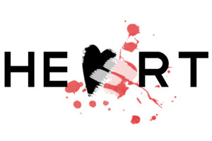
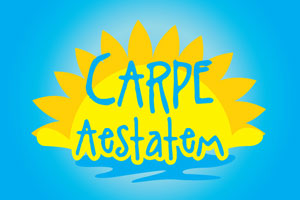

MY FOLKING HEART
Header/Branding for My Folking Heart
Featured folk blog
Ran and written by a good friend, Eric Walters
A musically inspired brand
CARPE AESTATEM
Logo created for a non-profit, Carpe Aestatem
Translation: "Seize the summer"
A logo capturing the "inner" child in all of us
Encouraging young adults to live a purposeful summer